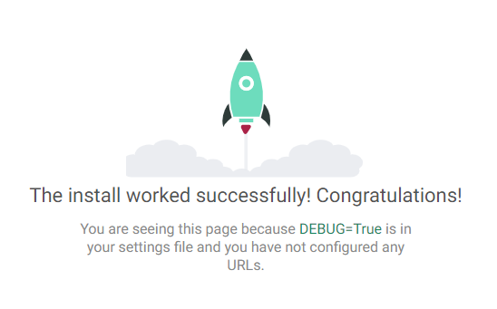
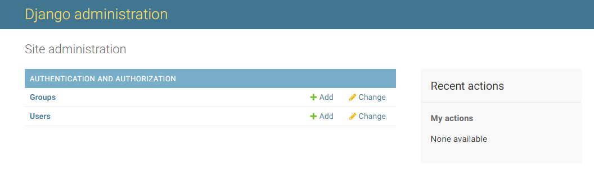
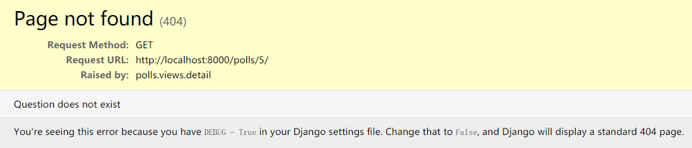

本文教你用Django搭建第一个网站，投票网站。
我们的投票网站要实现两个站点：
- 一个让人们查看和投票的公共站点。
- 一个让你能添加、修改和删除投票的管理站点。
我们使用的操作系统：win10
关键思想：通过服务器上的数据库存储相关信息，通过网站对数据库的信息呈现并修改。
Django安装和配置
创建一个项目工程文件夹，以后所有的操作都要在此文件夹下进行，例如我是web文件夹下。打开系统自带的cmd（最好是cmd），并切换到此文件夹下
例如我的文件夹路径是E:\PythonProjects\web，那么我先输入e:再敲回车，使得切换到E盘，然后再cd E:\PythonProjects\web即可。
然后在cmd输入（其中my_env是创建的虚拟环境的名字）：
python -m venv my_env
来创建python的虚拟环境。然后输入：
my_env\Scripts\activate.bat
来激活虚拟环境，此时cmd提示输入的前端应该有(my_env)字样，表明进入了虚拟环境。
若要退出虚拟环境，请输入：my_env\Scripts\deactivate.bat
最后安装Django：
pip install Django
安装后，输入：python -m django --version命令，可以查看Django的版本。
我这里的版本是2.2。
建立工程
紧接着，我们来创建一些建立我们网站所必备的文件，输入下面的代码来创建一个工程。
django-admin startproject mysite
我们会发现在当前目录下多了一个叫mysite的文件夹，里面的文件是工程的必备文件。
这个startproject命令创建了如下的文件结构：
mysite/
manage.py
mysite/
__init__.py
settings.py
urls.py
wsgi.py
这些目录和文件的用处是：
- 最外层的
mysite/根目录只是你项目的容器，Django不关心它的名字，你可以将它重命名为任何你喜欢的名字。 manage.py: 一个让你用各种方式管理Django项目的命令行工具。你可以阅读 django-admin and manage.py 获取所有manage.py的细节。- 里面一层的
mysite/目录包含你的项目，它是一个纯Python包。它的名字就是当你引用它内部任何东西时需要用到的Python包名。 (比如mysite.urls). mysite/__init__.py：一个空文件，告诉Python这个目录应该被认为是一个Python包。如果你是Python初学者，阅读官方文档中的更多关于包的知识。mysite/settings.py：Django项目的配置文件。如果你想知道这个文件是如何工作的，请查看 Django settings 了解细节。mysite/urls.py：Django项目的URL声明，就像你网站的“目录”。阅读 URL调度器文档来获取更多关于URL的内容。mysite/wsgi.py：作为你的项目的运行在WSGI兼容的Web服务器上的入口。阅读如何使用 WSGI 进行部署了解更多细节。
然后我们运行如下命令：
cd mysite
python manage.py runserver
来在本地端口运行服务器。我们在浏览器中输入http://localhost:8000/或https://127.0.0.1:8000/来打开网页。正常情况下应该会看到如下界面：

表示已经成功运行啦！
注意：
- 千万不要将这个服务器用于和生产环境相关的任何地方。这个服务器只是为了开发而设计的。（Django 在 Web 框架方面是专家，在 Web 服务器方面并不是。）
- 仅仅是修改代码后，不必重启服务器来查看效果；但是添加新代码文件后则需要重启服务器来查看效果。
创建应用
在 Django 中，每一个应用都是一个Python 包，并且遵循着相同的约定。Django 自带一个工具，可以帮你生成应用的基础目录结构，这样你就能专心写代码，而不是创建目录了。
项目 VS 应用
项目和应用有啥区别？应用是一个专门做某件事的网络应用程序——比如博客系统，或者公共记录的数据库，或者简单的投票程序。项目则是一个网站使用的配置和应用的集合。项目可以包含很多个应用。应用可以被很多个项目使用。
请确定你现在处于 manage.py 所在的目录下，然后我们使用如下指令来创建一个名为polls的应用：
python manage.py startapp polls
这将会创建一个 polls 目录，它的目录结构大致如下：
polls/
migrations/
__init__.py
__init__.py
admin.py
apps.py
models.py
tests.py
views.py
这个目录结构包括了投票应用的全部内容。
编写简单的视图和绑定URL
打开 polls/views.py，把下面这些 Python 代码添加进去：
from django.http import HttpResponse
def index(request):
return HttpResponse("Hello, world. You're at the polls index.")
这是 Django 中最简单的视图。如果想看见效果，我们需要将一个 URL 映射到它——这就是我们需要 URLconf 的原因了。
为了创建 URLconf，请在 polls 目录里新建一个 urls.py 文件。
在 polls/urls.py 中，输入如下代码：
from django.urls import path
from . import views
urlpatterns = [
path('', views.index, name='index'),
]
一般来说，每一个应用都应该有一个自己的urls.py文件。第一项为空''表明不再增加url的下级路径；第二项views.index表明调用刚刚编写的views.py文件里的index()函数来响应请求。
下一步是要在根 URLconf 文件（可以理解为全局的url配置文件）中记录我们刚刚创建的 polls.urls 模块。在 mysite/urls.py 文件的 urlpatterns 列表里插入一个 include()， 如下：
from django.contrib import admin
from django.urls import include, path
urlpatterns = [
path('polls/', include('polls.urls')),
path('admin/', admin.site.urls),
]
函数 include() 允许引用其它 URLconfs。每当 Django 遇到 include 时，它会截断与此项匹配的 URL 的部分，并将剩余的字符串发送到 URLconf 以供进一步处理。举个例子，就是假如输入的地址是http://localhost:8000/polls/，那么它就会截断匹配的部分，在这个例子里也就是整个http://localhost:8000/polls/，剩下的空字符串''给polls.urls的urlpatterns去做匹配处理，恰好匹配到空字符串''，然后就会调用polls.view.index函数去处理。
Django设计 include() 的理念是使其可以即插即用。因为投票应用有它自己的 URLconf( polls/urls.py )，他们能够被放在 "/polls/" ，"/fun_polls/" ，"/content/polls/"，或者其他任何路径下，这个应用都能够正常工作。
何时使用 include()
当包括其它URL文件时你应该总是使用include()，而admin.site.urls是例外。
你刚刚已经把视图view与url绑定了，输入：
python manage.py runserver
来运行服务器，在浏览器输入http://localhost:8000/polls/，正常情况下应该看到字符串：Hello, world. You're at the polls index.
函数
path()具有四个参数，两个必须的参数：route和view，两个可选参数：kwargs和name。现在，是时候来研究这些参数的含义了。
path() 参数： route
route 是一个匹配 URL 的准则（类似正则表达式）。当 Django 响应一个请求时，它会从 urlpatterns 的第一项开始，按顺序依次匹配列表中的项，直到找到匹配的项。
这些准则不会匹配 GET 和 POST 参数或域名。例如，URLconf 在处理请求 https://www.example.com/myapp/ 时，它会尝试匹配 myapp/ 。处理请求 https://www.example.com/myapp/?page=3 时，也只会尝试匹配 myapp/。
path() 参数： view
当 Django 找到了一个匹配的准则，就会调用这个特定的视图函数，并传入一个 HttpRequest 对象作为第一个参数，被“捕获”的参数以关键字参数的形式传入。稍后，我们会给出一个例子。
path() 参数： kwargs
任意个关键字参数可以作为一个字典传递给目标视图函数。本教程中不会使用这一特性。
path() 参数： name
为你的 URL 取名能使你在 Django 的任意地方唯一地引用它，尤其是在模板中。这个有用的特性允许你只改一个文件就能全局地修改某个 URL 模式。
数据库配置
setting,py文件
现在，打开 mysite/settings.py 。这是个包含了 Django 项目设置的 Python 模块。
通常，这个配置文件使用 SQLite 作为默认数据库。如果你不熟悉数据库，或者只是想尝试下 Django，这是最简单的选择。Python 内置 SQLite，所以你无需安装额外东西来使用它。如果你使用 SQLite，那么你不需要在使用前做任何事——数据库会在需要的时候自动创建。
此外，关注一下文件头部的 INSTALLED_APPS 设置项。这里包括了会在你项目中启用的所有 Django 应用。应用能在多个项目中使用，你也可以打包并且发布应用，让别人使用它们。
通常， INSTALLED_APPS 默认包括了以下 Django 的自带应用：
django.contrib.admin— 管理员站点， 你很快就会使用它。django.contrib.auth— 认证授权系统。django.contrib.contenttypes— 内容类型框架。django.contrib.sessions— 会话框架。django.contrib.messages— 消息框架。django.contrib.staticfiles— 管理静态文件的框架。
这些应用被默认启用是为了给常规项目提供方便。
默认开启的某些应用需要至少一个数据表，所以，在使用他们之前，需要在数据库中创建一些表。请执行以下命令：
python manage.py migrate
这个 migrate 命令检查 INSTALLED_APPS 设置，为其中的每个应用创建需要的数据表，至于具体会创建什么，这取决于你的 mysite/settings.py 设置文件和每个应用的数据库迁移文件（我们稍后会介绍这个）。这个命令所执行的每个迁移操作都会在终端中显示出来。migrate命令只会为在 INSTALLED_APPS 里声明了的应用进行数据库迁移。
创建模型
在 Django 里写一个数据库驱动的 Web 应用的第一步是定义模型 - 也就是数据库结构设计和附加的其它元数据。
在这个简单的投票应用中，需要创建两个模型：问题 Question 和选项 Choice。Question 模型包括问题描述和发布时间。Choice 模型有两个字段，选项描述和当前得票数。每个选项属于一个问题。
这些概念可以通过一个简单的 Python 类来描述。按照下面的例子来编辑 polls/models.py 文件：
from django.db import models
class Question(models.Model):
question_text = models.CharField(max_length=200)
pub_date = models.DateTimeField('date published')
class Choice(models.Model):
question = models.ForeignKey(Question, on_delete=models.CASCADE)
choice_text = models.CharField(max_length=200)
votes = models.IntegerField(default=0)
每个字段都是 Field 类的实例 - 比如，字符字段被表示为 CharField ，日期时间字段被表示为 DateTimeField 。这将告诉 Django 每个字段要处理的数据类型。
每个 Field 类实例变量的名字（例如 question_text 或 pub_date ）也是字段名，所以最好使用对机器友好的格式。你将会在 Python 代码里使用它们，而数据库会将它们作为列名。
你可以使用可选的选项来为 Field 定义一个人类可读的名字。这个功能在很多 Django 内部组成部分中都被使用了，而且作为文档的一部分。如果某个字段没有提供此名称，Django 将会使用对机器友好的名称，也就是变量名。在上面的例子中，我们只为 Question.pub_date 定义了对人类友好的名字。对于模型内的其它字段，它们的机器友好名也会被作为人类友好名使用。
注意在最后，我们使用 ForeignKey 定义了一个关系。这将告诉 Django，每个 Choice 对象都关联到一个 Question 对象。Django 支持所有常用的数据库关系：多对一、多对多和一对一。
激活模型
首先得把 polls 应用安装到我们的项目里。
设计哲学
Django应用是“可插拔”的。你可以在多个项目中使用同一个应用。除此之外，你还可以发布自己的应用，因为它们并不会被绑定到当前安装的Django上。
为了在我们的工程中包含这个应用，我们需要在配置类 INSTALLED_APPS 中添加设置。因为 PollsConfig 类写在文件 polls/apps.py 中，所以它的点式路径是 'polls.apps.PollsConfig'。在文件 mysite/settings.py 中 INSTALLED_APPS子项添加点式路径后，它看起来像这样：
INSTALLED_APPS = [
'polls.apps.PollsConfig',
'django.contrib.admin',
'django.contrib.auth',
'django.contrib.contenttypes',
'django.contrib.sessions',
'django.contrib.messages',
'django.contrib.staticfiles',
]
现在你的 Django 项目会包含 polls 应用。接着运行下面的命令：
python manage.py makemigrations polls
makemigrations命令会在polls/migrations/目录下生成一些关于polls/models.py修改记录的文件。但是并没有修改到数据库。
你将会看到类似于下面这样的输出：
Migrations for 'polls':
polls/migrations/0001_initial.py:
- Create model Choice
- Create model Question
- Add field question to choice
现在，再次运行 migrate 命令，在数据库里创建刚刚建立的模型的数据表：
python manage.py migrate
这会使得数据库得以修改，使数据库包含了我们刚刚新建立的模型参数。
我们应该会看到类似的输出：
Operations to perform:
Apply all migrations: admin, auth, contenttypes, polls, sessions
Running migrations:
Rendering model states... DONE
Applying polls.0001_initial... OK
最后一行表明，模型更改成功同步于数据库上（在数据库里创建了与模型相关的存储结构）。
这个 migrate 命令选中所有还没有执行过的迁移（Django 通过在数据库中创建一个特殊的表 django_migrations 来跟踪执行过哪些迁移）并应用在数据库上 - 也就是将你对模型的更改同步到数据库结构上。
迁移是非常强大的功能，它能让你在开发过程中持续的改变数据库结构而不需要重新删除和创建表 - 它专注于使数据库平滑升级而不会丢失数据。我们会在后面的教程中更加深入的学习这部分内容。
现在，你只需要记住，改变模型并生效只需要这三步：
- 编辑
models.py文件，改变模型。 - 运行
python manage.py makemigrations <app_name>为模型的改变生成迁移文件。 - 运行
python manage.py migrate来应用数据库迁移。
Django命令行
运行：
python manage.py shell
来打开Django的命令行。
我们使用这个命令而不是简单的使用 Python 是因为 manage.py 会设置 DJANGO_SETTINGS_MODULE 环境变量，这个变量会让 Django 根据 mysite/settings.py 文件来设置 Python 包的导入路径。
当你成功进入命令行后，来试试数据库的API 吧，它允许你从数据库中读取和修改Choice和Question的数据。
输入下述Python命令：
from polls.models import Choice, Question #导入我们刚刚写的类
Question.objects.all() #执行后输出，表明Question类还没有对象（还没有数据）
from django.utils import timezone #导入时区
q = Question(question_text="What's new?", pub_date=timezone.now()) #创建一个问题
q.save() #将q保存到数据库中
q.id # 现在它有id值了（为1）
q.question_text #输出："What's new?"
q.pub_date #输出时间
q.question_text = "What's up?" #再次改变question_text值
q.save() #再次保存到数据库中
Question.objects.all() #展示数据库中Question的所有数据
但是，我们注意到，输入Question.objects.all()时，返回的<QuerySet [<Question: Question object (1)>]>值，并没有让我们了解到这个对象具体是什么样的，我们想让它有个对自己的描述，让我们清楚这是个什么样的对象。
让我们通过编辑 Question 模型的代码（位于 polls/models.py 中）来修复这个问题。给 Question 和 Choice 增加 __str__()方法：
from django.db import models
class Question(models.Model):
# ...
def __str__(self):
return self.question_text
class Choice(models.Model):
# ...
def __str__(self):
return self.choice_text
给模型增加__str__() 方法是很重要的，这不仅仅能给你在命令行里使用带来方便，Django 自动生成的 admin 里也使用这个方法来表示对象。
注意：这些都是常规的 Python方法。让我们添加一个自定义的方法，这只是为了演示：
import datetime
from django.db import models
from django.utils import timezone
class Question(models.Model):
# ...
def was_published_recently(self):
return self.pub_date >= timezone.now() - datetime.timedelta(days=1)
新加入的 import datetime 和 from django.utils import timezone 分别导入了 Python 的标准 datetime 模块和 Django 中和时区相关的 django.utils.timezone工具模块。如果你不太熟悉 Python 中的时区处理，看看 时区支持文档 吧。
保存文件然后通过 python manage.py shell 命令再次打开 Python 交互式命令行：
from polls.models import Choice, Question
Question.objects.all() #输出：]>
Question.objects.filter(id=1) #依据id查找对象
Question.objects.filter(question_text__startswith='What') #依据question_text内容查找对象
from django.utils import timezone
current_year = timezone.now().year #今年
Question.objects.get(pub_date__year=current_year) #依据年份查找对象
Question.objects.get(id=2) #访问不存在的对象会引起异常
Question.objects.get(pk=1) #大多时候，该语句等价于Question.objects.get(id=1)
q = Question.objects.get(pk=1)
q.was_published_recently() #调用was_published_recently()方法
q = Question.objects.get(pk=1)
q.choice_set.all() #显示与q相关联的choice，返回，注：choice_set是由于ForeignKey自动生成的子成员
# 创建三个choice，会在Choice自动创建对象
q.choice_set.create(choice_text='Not much', votes=0)
q.choice_set.create(choice_text='The sky', votes=0)
c = q.choice_set.create(choice_text='Just hacking again', votes=0)
c.question #Choice对象访问自己的question子属性，返回
# Question对象反之亦能关联到Choice对象
q.choice_set.all() #返回q关联到的choice的集合
q.choice_set.count() #返回q关联到的choice的个数
Choice.objects.filter(question__pub_date__year=current_year) #依据年份返回choice的集合
c = q.choice_set.filter(choice_text__startswith='Just hacking') #获取一个choice
c.delete() #删除这个choice
阅读 访问关系对象 文档可以获取关于数据库关系的更多内容。想知道关于双下划线的更多用法，参见 查找字段 文档。数据库 API 的所有细节可以在 数据库 API 参考 文档中找到。
Django管理页面
管理界面不是为了网站的访问者，而是为管理者准备的。
创建一个管理员账号
首先，我们得创建一个能登录管理页面的用户。请运行下面的命令：
python manage.py createsuperuser
然后输入用户名、邮箱和两次密码，以创建管理员账号。
进入管理界面
Django 的管理界面默认就是启用的。让我们启动开发服务器，看看它到底是什么样的。
如果开发服务器未启动，用以下命令启动它：
python manage.py runserver
然后输入浏览器地址：http://localhost:8000/admin/来打开管理页面，输入账号和密码登陆即可。
正常情况下，你会看到类似如下图的界面：

其中Groups和Users是可编辑的。它们是由 django.contrib.auth 提供的，这是 Django 开发的认证框架。
向管理页面中加入投票应用
但是我们的投票应用在哪呢？它没在索引页面里显示。
只需要做一件事：我们得告诉管理页面，问题 Question 对象需要被管理。打开 polls/admin.py 文件，把它编辑成下面这样：
from django.contrib import admin
from .models import Question
admin.site.register(Question)
类似地，你也可以往admin中添加Choice类。
添加Question类后，刷新界面，应该会是这个样子：

你可以在这个网页管理页面，管理你的数据库对象，修改Question的数据，或是增删用户等。
如果你发现Django的时间不对，请修改mysite/settings.py中的TIME_ZONE = 'Asia/Shanghai'。
编写视图
而在我们的投票应用中，我们需要下列几个视图：
- 问题索引页——展示最近的几个投票问题。
- 问题详情页——展示某个投票的问题和不带结果的选项列表。
- 问题结果页——展示某个投票的结果。
- 投票处理器——用于响应用户为某个问题的特定选项投票的操作。
在 Django 中，网页和其他内容都是从视图派生而来。每一个视图表现为一个简单的 Python 函数（或者说方法，如果是在基于类的视图里的话）。Django 将会根据用户请求的 URL 来选择使用哪个视图（更准确的说，是根据 URL 中域名之后的部分）。
为了将 URL 和视图关联起来，Django 使用了 URLconfs 来配置。URLconf 将 URL 模式映射到视图。本教程只会介绍 URLconf 的基础内容，你可以看看 URL调度器 以获取更多内容。
编写更多视图
现在让我们向 polls/views.py 里添加更多视图。这些视图有一些不同，因为他们接收参数：
def detail(request, question_id):
return HttpResponse("You're looking at question %s." % question_id)
def results(request, question_id):
response = "You're looking at the results of question %s."
return HttpResponse(response % question_id)
def vote(request, question_id):
return HttpResponse("You're voting on question %s." % question_id)
把这些新视图添加进 polls.urls 模块里，只要添加几个 url() 函数调用就行：
from django.urls import path
from . import views
urlpatterns = [
# example: /polls/
path('', views.index, name='index'),
# example: /polls/5/
path('/', views.detail, name='detail'),
# example: /polls/5/results/
path('/results/', views.results, name='results'),
# example: /polls/5/vote/
path('/vote/', views.vote, name='vote'),
]
然后看看你的浏览器，如果你转到 /polls/34/ ，Django 将会运行 detail() 方法并且展示你在 URL 里提供的问题 ID。再试试 /polls/34/vote/ 和 /polls/34/vote/ ——你将会看到暂时用于占位的结果和投票页。
当某人请求你网站的某一页面时——比如说，/polls/34/ ，Django 将会载入 mysite.urls 模块，因为这在配置项 ROOT_URLCONF 中设置了。然后 Django 寻找名为 urlpatterns 变量并且按序匹配正则表达式。在找到匹配项 polls/，它切掉了匹配的文本（polls/），将剩余文本——34/，发送至 polls.urls ，URLconf 做进一步处理。在这里剩余文本匹配了 <int:question_id>/，使得我们 Django 以如下形式调用 detail():
detail(request=, question_id=34)
question_id=34 由 <int:question_id> 匹配生成。使用尖括号“捕获”这部分 URL，且以关键字参数的形式发送给视图函数。上述字符串的 :question_id> 部分定义了将被用于区分匹配模式的变量名，而 int: 则是一个转换器决定了应该以什么变量类型匹配这部分的 URL 路径。
为每个 URL 加上不必要的东西，例如 .html ，是没有必要的。不过如果你非要加的话，也是可以的:
path('polls/latest.html', views.index),
写一个真正有用的视图
每个视图必须要做的只有两件事：返回一个包含被请求页面内容的 HttpResponse 对象，或者抛出一个异常，比如 Http404 。至于你还想干些什么，随便你。
你的视图可以从数据库里读取记录，可以使用一个模板引擎（比如 Django 自带的，或者其他第三方的），可以生成一个 PDF 文件，可以输出一个 XML，创建一个 ZIP 文件，你可以做任何你想做的事，使用任何你想用的 Python 库。
因为 Django 自带的数据库 API 很方便，我们曾在 教程第 2 部分 中学过，所以我们试试在视图里使用它。我们在 index() 函数里插入了一些新内容，让它能展示数据库里以发布日期排序的最近 5 个投票问题，以空格分割：
from django.http import HttpResponse
from .models import Question
def index(request):
latest_question_list = Question.objects.order_by('-pub_date')[:5]
output = ', '.join([q.question_text for q in latest_question_list])
return HttpResponse(output)
# Leave the rest of the views (detail, results, vote) unchanged
这里有个问题：页面的设计写死在视图函数的代码里的。如果你想改变页面的样子，你需要编辑 Python 代码。
所以让我们使用 Django 的模板系统，只要创建一个视图，就可以将页面的设计从代码中分离出来。
使用模板
首先，在你的 polls 目录里创建一个 templates 目录。Django 将会自动地在这个目录里查找模板文件。
你项目的 TEMPLATES 配置项描述了 Django 如何载入和渲染模板。默认的设置文件设置了 DjangoTemplates 后端，并将 APP_DIRS 设置成了 True。这一选项将会让 DjangoTemplates在每个 INSTALLED_APPS 文件夹中寻找 “templates” 子目录。这就是为什么尽管我们没有像在第二部分中那样修改 DIRS 设置，Django 也能正确找到 polls 的模板位置的原因。
在你刚刚创建的 templates 目录里，再创建一个目录 polls，然后在其中新建一个文件 index.html 。换句话说，你的模板文件的路径应该是 polls/templates/polls/index.html。因为 Django 会寻找到对应的 app_directories ，所以你只需要使用 polls/index.html 就可以引用到这一模板了。
模板命名空间
虽然我们现在可以将模板文件直接放在
polls/templates文件夹中（而不是再建立一个polls子文件夹），但是这样做不太好。Django 将会选择第一个匹配的模板文件，如果你有一个模板文件正好和另一个应用中的某个模板文件重名，Django 没有办法 区分 它们。我们需要帮助 Django 选择正确的模板，最简单的方法就是把他们放入各自的 命名空间 中，也就是把这些模板放入一个和 自身 应用重名的子文件夹里。换句话说，Django不会区分
templates文件夹的父文件夹，即需要templates文件夹下的子文件夹来区分所属的应用程序。
将下面的代码输入到刚刚创建的模板文件中：
{ % if latest_question_list % }
{ % for question in latest_question_list % }
- {{ question.question_text }}
{ % endfor % }
{ % else % }
No polls are available.
{ % endif % }
然后，让我们更新一下 polls/views.py 里的 index 视图来使用模板：
from django.http import HttpResponse
from django.template import loader
from .models import Question
def index(request):
latest_question_list = Question.objects.order_by('-pub_date')[:5]
template = loader.get_template('polls/index.html')
context = {
'latest_question_list': latest_question_list,
}
return HttpResponse(template.render(context, request))
上述代码的作用是，载入 polls/index.html 模板文件，并且向它传递一个上下文(context)。这个上下文是一个字典，它将模板内的变量映射为 Python 对象。
用你的浏览器访问 /polls/ ，你将会看见一个无序列表，列出了我们添加的 “What’s up” 投票问题，链接指向这个投票的详情页。
一个快捷函数：render()
「载入模板，填充上下文，再返回由它生成的 HttpResponse 对象」是一个非常常用的操作流程。于是 Django 提供了一个快捷函数，我们用它来重写 index() 视图：
from django.shortcuts import render
from .models import Question
def index(request):
latest_question_list = Question.objects.order_by('-pub_date')[:5]
context = {'latest_question_list': latest_question_list}
return render(request, 'polls/index.html', context)
注意到，我们不再需要导入 loader 和 HttpResponse 。
render()函数以request作为第一个参数，模板的路径为第二个参数，第三个的字典参数为可选参数。然后返回HttpResponse类型的对象。
抛出 404 错误
现在，我们来处理投票详情视图——它会显示指定投票的问题标题。下面是这个视图的代码：
from django.http import Http404
from django.shortcuts import render
from .models import Question
# ...
def detail(request, question_id):
try:
question = Question.objects.get(pk=question_id)
except Question.DoesNotExist:
raise Http404("Question does not exist")
return render(request, 'polls/detail.html', {'question': question})
这里有个新原则。如果指定问题 ID 所对应的问题不存在，这个视图就会抛出一个 Http404 异常。
我们稍后再讨论你需要在 polls/detail.html 里输入什么，但是如果你想试试上面这段代码是否正常工作的话，你可以暂时把下面这段输进去：
{{ question }}
这样你就能测试了。
输入不存在的id会出现类似如下的结果：

一个快捷函数：get_object_or_404()
尝试用 get() 函数获取一个对象，如果不存在就抛出 Http404 错误也是一个普遍的流程。Django 也提供了一个快捷函数，下面是修改后的详情 detail() 视图代码：
from django.shortcuts import get_object_or_404, render
from .models import Question
# ...
def detail(request, question_id):
question = get_object_or_404(Question, pk=question_id)
return render(request, 'polls/detail.html', {'question': question})
get_object_or_404()函数使用Django的数据对象作为第一个参数，使用任意数量的筛选参数作为余下的参数，这些筛选参数会传递给get()函数。如果对象不存在，会引起404错误。
也有 get_list_or_404() 函数，工作原理和 get_object_or_404() 一样，除了 get() 函数被换成了 filter() 函数。如果列表为空的话会抛出 Http404 异常。
使用模板系统
回过头去看看我们的 detail() 视图。它向模板传递了上下文变量 question 。下面是 polls/detail.html 模板里正式的代码：
{{ question.question_text }}
{ % for choice in question.choice_set.all % }
- {{ choice.choice_text }}
{ % endfor % }
模板系统统一使用点符号来访问变量的属性。在示例 中，首先 Django 尝试对 question 对象使用字典查找（也就是使用 obj.get(str) 操作），如果失败了就尝试属性查找（也就是 obj.str 操作），结果是成功了。如果这一操作也失败的话，将会尝试列表查找（也就是 obj[int] 操作）。
在 { % for % } 循环中发生的函数调用：question.choice_set.all 被解释为 Python 代码 question.choice_set.all() ，将会返回一个可迭代的 Choice 对象，这一对象可以在 { %for % } 标签内部使用。
查看 模板指南 可以了解关于模板的更多信息。
去除模板中的硬编码 URL
还记得吗，我们在 polls/index.html 里编写投票链接时，链接是硬编码的：
{{ question.question_text }}
问题在于，硬编码和强耦合的链接，对于一个包含很多应用的项目来说，修改起来是十分困难的。然而，因为你在 polls.urls 的 url() 函数中通过 name 参数为 URL 定义了名字，你可以使用 { % url % } 标签代替它：
{{ question.question_text }}
这个标签的工作方式是在 polls.urls 模块的 URL 定义中寻具有指定名字的条目。你可以回忆一下，具有名字 detail 的 URL 是在如下语句中定义的：
...
# the 'name' value as called by the { % url % } template tag
path('/', views.detail, name='detail'),
...
也就是说，url 'detail' question.id返回的是/polls/2/，因为question.id类似于参数被传入<int:question_id>/。
如果你想改变投票详情视图的 URL，比如想改成 polls/specifics/12/ ，你不用在模板里修改任何东西（包括其它模板），只要在 polls/urls.py 里稍微修改一下就行：
...
# added the word 'specifics'
path('specifics//', views.detail, name='detail'),
...
为 URL 名称添加命名空间
教程项目只有一个应用，polls 。在一个真实的 Django 项目中，可能会有五个，十个，二十个，甚至更多应用。Django 如何分辨重名的 URL 呢？举个例子，polls 应用有 detail 视图，可能另一个博客应用也有同名的视图。Django 如何知道 { % url % } 标签到底对应哪一个应用的 URL 呢？
答案是：在根 URLconf 中添加命名空间。在 polls/urls.py 文件中稍作修改，加上 app_name 设置命名空间：
from django.urls import path
from . import views
app_name = 'polls'
urlpatterns = [
path('', views.index, name='index'),
path('/', views.detail, name='detail'),
path('/results/', views.results, name='results'),
path('/vote/', views.vote, name='vote'),
]
现在，编辑 polls/index.html 文件，从：
{{ question.question_text }}
修改为指向具有命名空间的详细视图：
{{ question.question_text }}
TO BE CONTINUED…
https://docs.djangoproject.com/zh-hans/2.2/intro/tutorial04/